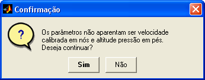
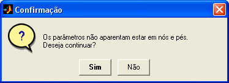
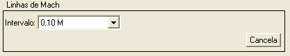
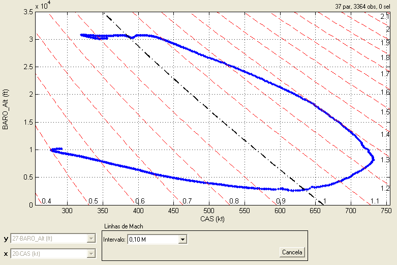

| Menu Exibir |
|
Essa função
permite exibir as linhas de Mach em um gráfico
de Altitude Pressão (ft) por Velocidade Calibrada (kt), fornecendo ao
usuário o
envelope Vc ×
Zp ×
M
do voo em análise.
- Selecione e “x” o
parâmetro de velocidade calibrada em nós;
- Selecione e “y” o
parâmetro de altitude pressão em pés;
- Clique no menu “Exibir ► Linhas de Mach” ou
no botão na
Barra de Ferramentas.
O R_DAT irá
analisar os parâmetros selecionados em x e y e
avisará o usuário caso não os identifique como altitude pressão em pés
e
velocidade calibrada em nós:


| Nota: Os parâmetros
devem estar nas unidades solicitadas para a correta exibição. |
Após a análise
e confirmação (caso necessário), a Caixa de
Diálogo solicitará que o usuário indique os parâmetros para a
apresentação:

● No campo
“Intervalo”, indique o passo entre as
linhas de Mach exibidas. As opções são:

As linhas de
Mach são apresentadas como linhas tracejadas
vermelhas.
A linha de Mach
= 1 é apresentada em destaque, em
traço-ponto preto.
O número de
Mach de cada linha é apresentado na borda
inferior e na lateral direita do gráfico.
Caso a exibição
das etiquetas
de dados esteja ativada, os dados
apresentados na etiqueta serão relativos ao envelope Vc ×
Zp ×
M, conforme ilustrado a seguir:

As funções de zoom
e arrastamento do gráfico pedem ser utilizadas normalmente, mas as
demais
operações serão desabilitadas durante a apresentação das linhas de
Mach. Para
desabilitar a exibição, clique no botão “Cancela”.
| |
Etiquetas
de dados |
Pontos de
ensaio |
|